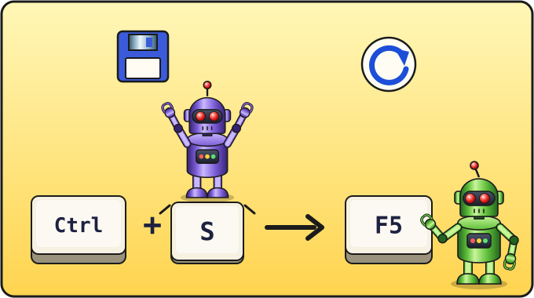

Урок 1 из 16 ⏱ 45 минут
Первая программа
Сегодня ты создашь свой первый файл с кодом, и компьютер с тобой поздоровается. А ещё ты узнаешь главный цикл любого программиста: написать → сохранить → обновить.
- создашь в Geany файл
proba.htmlи сохранишь его в папкуkod; - напишешь страницу на HTML и первую команду на JavaScript;
- откроешь свою программу в браузере;
- научишься быстро проверять изменения.
| 5 мин | Как браузер запускает программы |
| 10 мин | Создаём и сохраняем файл |
| 15 мин | Набираем код и запускаем |
| 15 мин | Эксперименты и задания |

Как это работает
Мы будем писать файлы, имя которых заканчивается на .html. Браузер умеет их открывать. В таком файле живут два языка:
- HTML описывает, что есть на странице: заголовки, текст, поле для игры.
- JavaScript (сокращённо JS) описывает, что делать: показывать сообщения, считать, двигать змейку.
Мы пишем текст в редакторе, а браузер читает его и выполняет. Вот и всё волшебство.
Шаг 1. Создаём файл
- Открой Geany. Если там открыт какой-то старый файл, закрой его крестиком на вкладке.
- Выбери Файл → Создать (File → New) или нажми Ctrl + N. Появится пустой лист с вкладкой «untitled» (без имени).
- Сразу сохрани его: Файл → Сохранить как (File → Save As) или Ctrl + Shift + S.
- В окне сохранения слева выбери свою домашнюю папку (значок домика), затем двойным щелчком открой папку kod.
- В поле Имя (Name) напиши
proba.htmlи нажми Сохранить.
.html Geany узнаёт, на каком языке ты пишешь, и начинает раскрашивать код. Так проще заметить ошибки.
Шаг 2. Пишем код
Переключи раскладку на EN и аккуратно набери код ниже. Номера строк набирать не надо, Geany ставит их сам. Отступы в начале строк можно делать клавишей Tab, а после Enter Geany обычно сам ставит нужный отступ.
<!DOCTYPE html>
<html>
<head>
<meta charset="utf-8">
<title>Проба</title>
</head>
<body>
<h1>Моя первая программа</h1>
<script>
alert("Привет! Я твой компьютер.");
</script>
</body>
</html>
Шаг 3. Сохраняем и запускаем
- Нажми Ctrl + S, чтобы сохранить. Посмотри на вкладку: если имя файла было красным или со звёздочкой
*, после сохранения оно станет обычным. - Открой файловый менеджер и зайди в папку kod. Там лежит твой файл proba.html.
- Нажми на него правой кнопкой мыши и выбери Открыть с помощью… → Firefox. Если Firefox — браузер по умолчанию, хватит просто двойного щелчка.
Появится окошко с надписью «Привет! Я твой компьютер.» Нажми OK, и ты увидишь страницу с заголовком «Моя первая программа».
Разберём, что мы написали
HTML состоит из тегов — слов в уголках. Обычно теги идут парами: открывающий <body> и закрывающий </body> (с косой чертой). Всё, что между ними, лежит «внутри», как в коробке.
| Что написано | Что значит |
|---|---|
<!DOCTYPE html> | «Браузер, это HTML-страница». Всегда первая строка. |
<html> … </html> | Самая большая коробка: в ней вся страница. |
<head> … </head> | «Голова»: служебные сведения, на странице их не видно. |
<meta charset="utf-8"> | Чтобы русские буквы показывались правильно. |
<title> | Название, которое видно на вкладке браузера. |
<body> … </body> | «Тело»: то, что видно на странице. |
<h1> | Большой заголовок. |
<script> … </script> | Здесь начинается JavaScript! |
А вот наша первая строчка на JavaScript:
alert("Привет! Я твой компьютер.");
alert— команда, которая показывает окошко с сообщением. (По-английски alert — «тревога, внимание».)- В круглых скобках
( )мы говорим команде, что показать. - Текст всегда пишут в кавычках
" ". Внутри кавычек можно писать по-русски. - Точка с запятой
;в конце — как точка в конце предложения: команда закончилась.
Главный цикл программиста
Теперь самое важное. Каждый раз, когда ты меняешь код, делай так:
Окно браузера закрывать не нужно: после сохранения просто нажми в нём F5, и браузер заново прочитает файл.
Эксперименты
Попробуй по очереди и после каждого изменения делай Ctrl + S → F5:
- Поменяй текст внутри кавычек в
alertна свой. - Поменяй текст заголовка между
<h1>и</h1>. - Добавь под заголовком абзац текста:
<p>Меня зовут …</p>. Тег<p>означает абзац (paragraph).
- Сделай так, чтобы появилось три окошка подряд: «Раз», «Два», «Три». Для этого напиши три строчки с
alertодну под другой.
Заметь: программа выполняется сверху вниз, по одной команде за раз. Это очень важное правило! - Что будет, если убрать кавычки:
alert(Привет);? Попробуй, а потом верни как было. (Почему так вышло, узнаем на следующем уроке.) - ⭐ Попробуй команду
alert(2 + 3);— без кавычек. Что покажет компьютер?
Если не работает
- Окошко не появляется? Проверь, что код набран в английской раскладке и кавычки обычные
". - Изменения не видны? Файл сохранён (Ctrl + S)? Страница обновлена (F5)?
- Код не раскрашивается? Наверное, файл сохранён без
.htmlв конце имени. Сохрани его заново через «Сохранить как». - Вместо русских букв непонятные значки? Проверь строку
<meta charset="utf-8">.
Проверь себя
- В папке
kodлежит мой файлproba.html. - Я знаю, что HTML описывает страницу, а JavaScript — действия.
- Я помню цикл: пишу → Ctrl+S → F5 → смотрю.